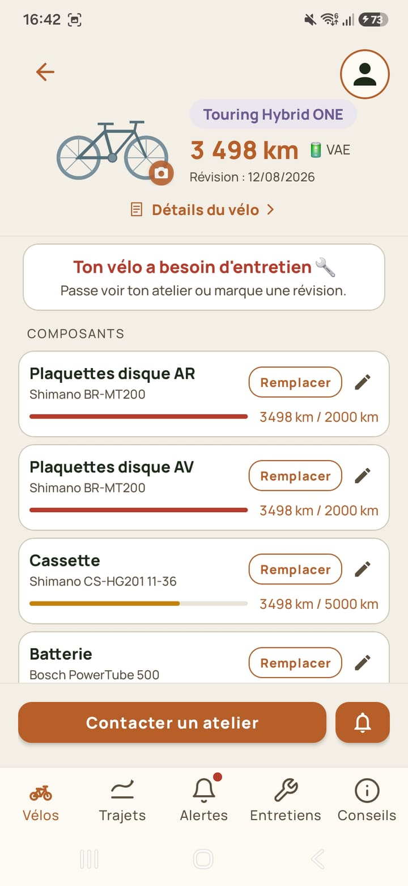

Suivi par composant
Chaîne, cassette, pneus, plaquettes, plateau, roues, batterie et moteur (VAE). Chaque pièce a son seuil et sa jauge : vert, orange, rouge.
Ton compagnon qui surveille l'usure de tes composants vélo en silence et t'alerte au bon moment, pour ne plus jamais subir une panne surprise ou une facture imprévue.

Pensé pour qui roule au quotidien. Pas besoin d'être mécanicien.
Chaîne, cassette, pneus, plaquettes, plateau, roues, batterie et moteur (VAE). Chaque pièce a son seuil et sa jauge : vert, orange, rouge.
Déclare tes trajets réguliers une fois (boulot, courses, sortie du dimanche) et l'app les compte pour toi. Tu confirmes ta semaine en un tap.
Lubrification, pression, freins, révision annuelle : le rappel tombe quand c'est dû. Tu ajoutes les tiens, pour l'assurance ou l'antivol.
Tu crèves, tes freins mordent mal, ça fait un bruit : 15 fiches écrites pour le bord de route. La sécurité d'abord, la réparation ensuite.
Renseigne ton mécano préféré : ses horaires, son téléphone et l'itinéraire à un tap depuis chaque fiche vélo, et depuis les Conseils.
Tu sais combien de kilomètres a tenu ta dernière chaîne, et si la prochaine fait mieux. Chaque remplacement se note en deux taps.
Plusieurs vélos ? Chacun a son suivi, ses alertes et son historique.
Le jour où tu veux confirmer ta semaine, et le moment où tu veux recevoir tes notifications. Trois minutes.
Cherche-le dans le catalogue et ses composants sont créés avec leur marque et leur modèle. Sinon, saisie à la main et seuils standard, que tu affines quand tu veux.
Le boulot, les courses, la sortie du dimanche. Une fois pour toutes.
Tu confirmes ta semaine en un tap. L'app calcule l'usure et t'alerte quand une pièce atteint son seuil. Et pas avant.
Deux taps depuis l'alerte. Le compteur repart, l'historique se remplit.
BikeHealth est gratuit, sur Android.
Une question, un bug, une idée ? Écris-nous.
Un outil web pour suivre la flotte de tes clients : alertes proactives, prise de RDV, fiches vélos partagées. En cours de développement.
Être tenu au courant